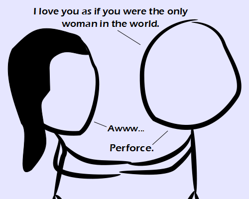

Comic JK 884
When I Feel Like It
⇤
<
?
>
⇥

⇤
<
?
>
⇥
Forum
.
RSS
.
Digg
.
Facebook
.
Reddit
.
Twitter
.
Stumbleupon
Enter your thoughts on number 884 here.. Please, no spamming, trolling, phreaking, or permanently removing all competitors. People who (knew/didn't know or guessed wrong/guessed correctly) what perforce means: (8/12/3) > I think there are 8 liars. >>I prefer Subversion. >>>Tortoise! >>>>Tortoise is just a front end silly. You're still using cvs or svn or git. >>>>>Duh. But Tortoise makes svn tolerable. >>>>>Or Mercurial. YouTube: 4XpnKHJAok8 time 17:50 I don't get it. >He feels as if every other woman in the world is dead, so she is the only option left. Ergo "by force". >>I thought "Perforce" was revision control software. Perforce = por fuerza ? >Me da que si, o algo similar Did anybody else ever have a teacher try to explain that "Uranus" is actually pronounced like "YER in iss" ? > The Romans said it like "OOO-ra-nose", with a hard 'r' and 's' like sss, not z like in nose. >> But we aren't in Rome, so we shouldn't do as the Romans do. >>> When it's a ROMAN word, the correct pronunciation around the world is the one that the Romans used. >>>> It's an English word that happens to be derived from a Roman word. You wouldn't say we should pronounce all derived words the way they were originally... >>>>> How do YOU pronounce "jalape�o" then? >>>>> That's like saying that bastardized American spellings which clearly originate from very poorly educated settlers are correct English, but they are not. They are American bastardizations. Doing something that's blatantly incorrect for many generations does not magically make it correct. >>>>>>I saw that "H.M.S. EnterpriZe" in the opening of Enterprise. YOU can't pronounce "Thames" properly. >>>>>>Actually, by your definition, it does. Blah blah, prescriptive vs descriptive. The French could make the same arguments about your bastardizations of their words. Also, he who wins the wars writes the rules, etc. >>>>>>>Well, that rules out the Americans, then. >>>>>>>I thought it was just the ones who comment last in this box >>>>>>>>It's been over 200 years. get. over. it. seriously. >>>>>>>>> The rest of the world has long gotten over the fact that Americans are pretty much wrong about everything but always think that they're right.